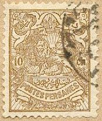
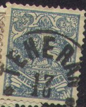
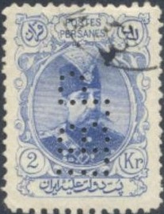
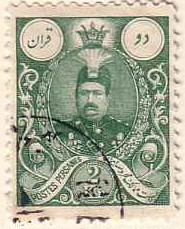
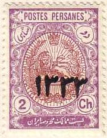

Return To Catalogue - 1870-1893 issues
Note: on my website many of the
pictures can not be seen! They are of course present in the
catalogue;
contact me if you want to purchase the catalogue.
More information about stamps from Persia, forgeries etc. can be found on: http://www.persi.com/fakes/fake.html or http://www.iranphilatelic.org/scams.htm.
For stamps of Persia issued from 1894 to 1902, click here.


1 ch violet 1 ch violet on blue (1908) 2 ch violet 2 ch violet on blue (1908) 3 ch green 3 ch green on blue (1908) 5 ch red 6 ch red on blue (1908) 9 ch orange on blue (1908) 10 ch brown 10 ch brown on blue (1908) 12 ch blue Surcharged
'1 CHAI' (violet) on 3 ch green '1 CHAHI' (violet or black) on 3 ch green '1 CHAHI' (blue) on 10 ch brown '1 CHAI' (violet) on 10 ch brown '2 CHAHIS' (blue) on 3 ch green '2 CHAHIS' on 5 ch red (1904) '3 CHAHIS' on 5 ch red (1904) '6 CHAHIS' on 10 ch brown (1904) Overprinted
'P.L.TEHERAN' (violet, black or red) on 1 ch violet on blue 'P.L.' (violet or blue) on 2 c violet 'Controle' on 2 c violet 'P.L. Isfahan' on 2 c violet 'CONTROLE' on 2 c violet
Overprinted 'Imprimes' and arabic text (1909)

2 c violet on blue
A rare provisional issue exist (only 500 stamps issued for each value) with overprint of an arabic text 'Chahi 1' on the 6 values issued in 1908. The overprint was performed in several colours, different for each value.
(Colis Postaux overprint)
The 1 ch violet on blue, 2 ch violet on blue, 3 ch green on blue, 6 ch red on blue, 9 ch orange on blue and 10 c brown on blue exist with overprint 'Colis Postaux' (parcel stamps).
('Service' overprint)
Some values (1 ch violet, 2 ch violet, 3 ch green, 5 ch red, 10 ch brown and 12 ch blue) exist with overprint 'Service' to serve as official stamps.
Value of the stamps |
|||
vc = very common c = common * = not so common ** = uncommon |
*** = very uncommon R = rare RR = very rare RRR = extremely rare |
||
| Value | Unused | Used | Remarks |
| All values | vc to * | vc to * | |

1 Kr lilac 2 Kr blue 5 Kr brown 10 Kr red 20 Kr orange 30 Kr green 50 Kr green Surcharged
'1 CHAI' (black or red) on 1 Kr violet 2 ch on 2 K blue 2 ch on 5 K (black or violet) on 5 Kr brown '9 CHAHIS' on 1 Kr lilac 12 ch (blue, black or violet) on 10 Kr red 2 TOMANS (blue or red) on 50 Kr green 2 TOMANS (blue or red) with persian text on 50 Kr green 3 TOMANS (black, violet or red) on 50 Kr green 3 TOMANS (black, violet, red or blue) and persian text on 50 Kr green
('Service' overprint)
All unsurcharged values exist with 'Service' overprint (1902) for official purposes. The values 2 Toman on 50 Kr and 3 Toman on 50 Kr also received this overprint in 1905.
Value of the stamps |
|||
vc = very common c = common * = not so common ** = uncommon |
*** = very uncommon R = rare RR = very rare RRR = extremely rare |
||
| Value | Unused | Used | Remarks |
| All values | vc to * | vc to * | |
| 50 K | *** | *** | |
| 2 TOMANS on 50 K | *** | *** | |
| 3 TOMANS on 50 K | *** | *** | |


1 ch violet 2 ch grey 3 ch green 6 ch red 10 ch brown 13 ch blue
Value of the stamps |
|||
vc = very common c = common * = not so common ** = uncommon |
*** = very uncommon R = rare RR = very rare RRR = extremely rare |
||
| Value | Unused | Used | Remarks |
| All values | vc to c | vc to c | Misprints: 2 ch red and 6 ch grey: *** |
Forgeries exist of these stamps. According to http://bigblue1840-1940.blogspot.sg/2013/01/StampForgeriesofIranPersia.html the lower right corner has an incomplete oval in the forgeries.


13 ch blue 26 ch brown 1 Kr red 2 Kr green 3 Kr blue 4 Kr yellow (two shades were issued) 5 Kr brown 10 Kr red 20 Kr grey 30 Kr lilac Larger size
50 Kr gold, red and black
Value of the stamps |
|||
vc = very common c = common * = not so common ** = uncommon |
*** = very uncommon R = rare RR = very rare RRR = extremely rare |
||
| Value | Unused | Used | Remarks |
| All values | vc to c | vc to c | |
| 50 K | *** | ** | |
A rare provisional issue exist (only 500 stamps issued for each value) with overprint of an arabic text 'Chahi 2' on all values (except 50 Kr) in several colours, different for each value.
(Colis Postaux overprint)
All values, except 50 Kr exist with overprint 'Colis Postaux' (parcel stamps). The 26 ch also exists with another 'Colis Postaux' overprint (different type of overprint, with more fancy letters).

(Reduced sizes)
1 ch orange and brown 2 ch violet and brown 3 ch green and brown 6 ch red and brown 9 ch black and brown 10 c lilac and brown 13 c blue and brown 26 c green and brown 1 Kr violet and olive (border silver) 2 Kr green and olive (border silver) 3 Kr grey and olive (border silver) 4 Kr blue and olive (border silver) 5 Kr brown and olive (border gold) 10 Kr orange and olive (border gold) 20 Kr green and olive (border gold) 30 Kr red and olive (border gold)
Value of the stamps |
|||
vc = very common c = common * = not so common ** = uncommon |
*** = very uncommon R = rare RR = very rare RRR = extremely rare |
||
| Value | Unused | Used | Remarks |
| All values | vc to c | vc to c | |
These stamps have perforation 12.
(Relais overprint, reduced size)
The values 2 ch, 3 ch, 6 ch and 13 ch exist with overprint 'Relais' and arabic text (1912: value: c).
In 1926 these stamps were overprinted with 'Regne de Pahlavi 1926' (all values: vc to ***). I have seen an inverted overprint on the 1 ch value.
All values exist with overprint 'Service' on top and arabic text at the bottom (issued 1913 as official stamps; value: vc to *).
Surcharged
'5 Chahis' on 13 ch blue and brown '5 Chahis' on 1 Kr violet and olive '12' in a rectangle on 13 ch blue and brown

(Genuine overprint)
In 1915 the values 1 ch, 2 ch, 3 ch, 6 ch, 9 ch, 10 ch and 1 Kr were overprinted with '1333' in arabic numerals. The values 1 Kr, 10 Kr, 20 Kr and 30 Kr were also overprinted with '1334'. Many forged overprints exist.
(Genuine overprint)

('1338' overprint)
In 1919 the values 2 Kr, 3 Kr, 4 Kr, 5 Kr, 10 Kr, 20 Kr and 30 Kr were overprinted with '1337' in arabic numerals. The value 2 Kr also exists with the overprint '1338' in arabic numerals. Many forged overprints exist.
Surcharged with date and value


'1 CH' on 3 ch violet and brown '1 CH' on 9 ch grey and brown '1 CH' on 10 ch lilac and brown '3 CH' on 9 ch grey and brown '3 CH' on 10 ch lilac and brown '3 CH' on 26 ch green and brown '24 CHAHIS' on 4 Kr blue and olive '10 KRANS' on 5 Kr brown and olive
1927 Airmail stamps, overprinted with 'POSTE AERIENNE', arabic text and image of an earoplane. The overprint was performed on a special printing with brighter colours and a perforation of 11 1/2 (instead of 12 for the normal stamps). Forged overprints exist.
Genuine and forged airmail oveprints; distinguishing
characteristics.
1 ch orange and brown 2 ch violet and brown 3 ch green and brown 6 ch red and brown 9 ch black and brown 10 c lilac and brown 13 c blue and brown 26 c green and brown 1 Kr violet and olive (border silver) 2 Kr green and olive (border silver) 3 Kr grey and olive (border silver) 4 Kr blue and olive (border silver) 5 Kr brown and olive (border gold) 10 Kr orange and olive (border gold) 20 Kr green and olive (border gold) 30 Kr red and olive (border gold)
Value of the stamps |
|||
vc = very common c = common * = not so common ** = uncommon |
*** = very uncommon R = rare RR = very rare RRR = extremely rare |
||
| Value | Unused | Used | Remarks |
| 1 c to 26 ch | * | * | |
| 1 K to 5 K | ** | ** | |
| 10 K to 30 K | RR | RR | |